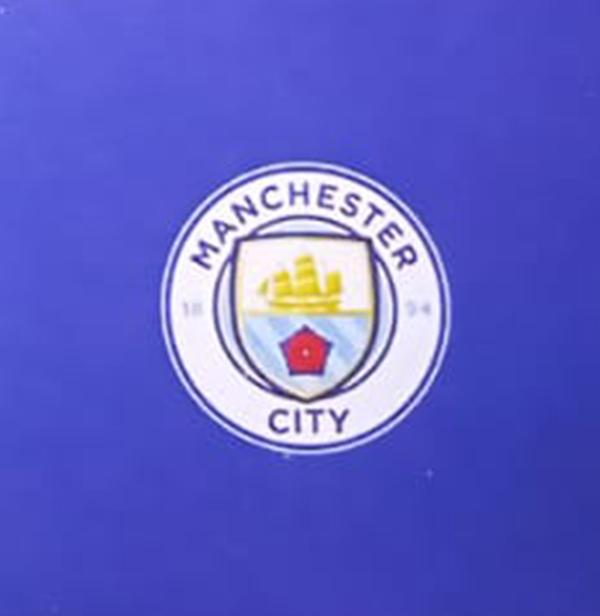

About Manchester City Football Club

Manchester City Football Club is an English football club based in Manchester that competes in the Premier League, the top flight of English football. Founded in 1880 as St. Mark's (West Gorton), it became Ardwick Association Football Club in 1887 and Manchester City in 1894. The club's home ground is the Etihad Stadium in east Manchester, to which it moved in 2003, having played at Maine Road since 1923. The club adopted their sky blue home shirts in 1894 in the first season of the club's current iteration, that have been used ever since.[4] In terms of trophies won, it is the sixth-most successful club in English football.
Manchester City entered the Football League in 1892, and won their first major honour with the FA Cup in 1904. The club had its first major period of success in the late 1960s, winning the League, European Cup Winners Cup, FA Cup and League Cup under the management of Joe Mercer and Malcolm Allison. After losing the 1981 FA Cup Final, the club went through a period of decline, culminating in relegation to the third tier of English football for the only time in its history in 1998. They since regained promotion to the top tier in 2001–02 and have remained a fixture in the Premier League since 2002–03.The club received considerable financial investment in both playing staff and club facilities following the club's takeover by Sheikh Mansour bin Zayed Al Nahyan through the Abu Dhabi United Group in 2008.[5] This started a new era of achievement, with the club winning the FA Cup in 2011 and the Premier League in 2012, both their first since the 1960s, followed by another League in 2014. Under the management of Pep Guardiola City won the Premier League in 2018, becoming the only Premier League team to attain 100 points in a single season. In 2019, they won four trophies, completing an unprecedented sweep of all domestic trophies in England and becoming the first English men's team to win the domestic treble.[6] In addition to winning the third Premier League title in the Guardiola era, City reached their first European Cup final in 2021, where they lost to Chelsea.